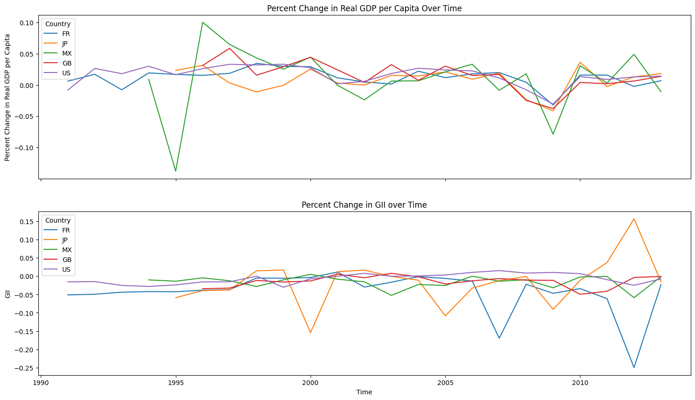

Introduction
Why should we care about the connection between economic growth and gender equality? It’s a big question! As we explore today’s global challenges, we can see how economies and societies are woven together—economic growth isn’t just about numbers; it impacts lives, opportunities, and well-being. One aspect we’re especially curious about is gender equality: Does a stronger economy mean more equal opportunities for all genders?
Our main research question is: How might changes in Real GDP per capita predict changes in the Gender Inequality Index (GII) across different countries? Our hypothesis is that economic growth should support progress in gender equality: as GDP per capita increases, the GII decreases, signaling improvements in equality. We decided to dig into the data to find out. Using Promptly Technologies’s open-source Python library Imfp, our aim is to see if there’s a real, measurable connection between the two variables.
Ready for some insights? Spoiler alert: our results didn’t exactly match our hypothesis, but they did open up fascinating questions about what really drives gender equality beyond just economic growth. Let’s dive in!
Data Preparation
To explore how economic growth connects with gender equality, we turned to the Imfp library to access a wealth of global economic data, ready to analyze through some straightforward API calls. Let’s break down our two main variables of interest. Here’s the lowdown on the 4 key data series we pulled together:

Dependent Variable: Percent Change in Gender Inequality Index (GII)
Our gender equality measure, the Gender Inequality Index (GII), is a composite score that reflects inequality in three key areas: reproductive health, empowerment, and labor market, ranging from 0 (equality) to 1 (inequality). We calculated the percent change in GII over time to make it easier to compare GII change across countries with different baseline levels of inequality.
Independent Variable: Percent Change in Real GDP per capita
Our economic growth measure is real GDP per capita, an indicator of a country’s economic output per person, adjusted for inflation. The higher the real GDP per capita, the wealthier and more prosperous a country is. Here is a peek at the formula:

Data Visualization
Scatterplot
Nothing like a good scatterplot to help us understand the relationship between two numbers, right? For our project, the scatterplot lets us visually explore how Percent Change in Real GDP per capita relates to Percent Change in GII. Each dot on the plot represents a country-year combo. The gentle upward slope suggests that in years of low GDP growth, gender inequality tends to decrease a bit faster, while in years of high GDP growth, the inequality drops at a slightly slower rate. It’s a subtle clue, but slower-growing economies might be making slightly quicker strides in gender equality.


Time Series Line plot
The time series line plot gives us the big picture of GDP and GII changes over time across a few select countries, including the United States, Japan, the United Kingdom, France, and Mexico. Mexico, for example, saw great GDP swings in 1995, yet its GII stayed relatively stable. Meanwhile, Japan and France saw some dramatic GII shifts. These fluctuations leave us wondering: what historical events sparked these changes? We may need to take a deeper look into each country’s unique timeline to find the answers.
 
Boxplot
Next, we have the boxplot to help us visualize the distribution. By sequencing countries in ascending order of median GDP change, we see an interesting trend: countries with higher median GDP growth also seem to show more variability in their GDP changes. The GII change, on the other hand, keeps a relatively stable median, hinting at a weaker association with GDP growth.


Heatmap
Finally, our heatmap wraps it all up with a quick, intuitive look at correlations between GDP and GII across countries. In countries like Estonia (EE) and Ireland (IE), Australia (AT), South Africa (ZA), Thailand (TH), Slovenia (SI), we see positive correlations in warm colors, indicating that as GDP growth rates increase, GII growth rates tend to rise as well. For countries like Cyprus (CY), Romania (RO), and the United States (US), we see cooler colors, representing negative correlations: as GDP growth rate rises, GII growth rates decrease, suggesting an improvement in gender equality alongside economic growth. This color-coded comparison leaves us curious—could the distinction between developed and developing countries play a role in these relationships? It’s a question that might inspire future research directions!


Statistical Analysis
Descriptive Statistics
Let’s start with a quick overview of our descriptive statistics: our dataset includes 915 data points. On average, GII change is -3.15%, indicating an overall reduction in gender inequality over time. Meanwhile, GDP change averages 2.35%, hinting at modest economic growth. A full breakdown of these values can be found in the table below for more detail.

Regression Analysis
To get a sense of any relationship between GDP change and GII change, we ran a simple linear regression. Here’s what we found:
P-value: With a p-value of 0.057, we fail to reject the null hypothesis. There is no statistically significant relationship. In other words, we don’t find strong evidence of a link between GDP and GII changes.
R-squared: GDP change explains only 0.4% of the variation in GII change—a pretty minimal effect.
95% Confidence Interval: We’re 95% confident the interval from -0.003 to 0.169 captures the true slope. The effect of GDP change on GII is uncertain as 0 is within this range.
Time Series Analysis
Time series analysis allows us to dig deeper into how GII and GDP changes play out over time—and potentially influence one another. Here’s the rundown:
Stationarity check: Both GII and GDP change series are stationary, meaning their means and variances are stable over time, setting us up for reliable forecasting.
VAR Model (Vector Autoregression): This multivariate model lets us explore how past values in both series relate to current values. Notably, past GII changes significantly impact current GII changes.
Model Performance: The VAR model has good fit, as shown by the forecast closely tracking actual values. Low MAE (Mean Absolute Error) and RMSE (Root Mean Squared Error) confirm that our model predicts GII and GDP change with minimal error. Check out the plots and table below!
Granger Causality Test: Curious whether GDP changes can predict changes in GII? The Granger causality test says no. With p-values above 0.05, we fail to find evidence that GDP changes drive GII changes. This suggests that while both variables evolve over time, they don’t seem to directly influence each other.


Conclusion
In wrapping up our analysis, we found no evidence to support a significant relationship between the Change in Real GDP per capita and the Change in the Gender Inequality Index (GII). This suggests that economic growth may not have a direct impact on gender equality. However, our findings open the door to questions for future research.
In terms of the Imfp library, we gained valuable experience working with real-world economic indicators like GDP and the GII. The library’s function in fetching databases, parameters, and datasets made it straightforward to access IMF’s data, allowing us to focus on analysis instead. The integration of other Python tools—such as seaborn, matplotlib, and numpy—not only streamlined our computational processes but also ensured consistency across the project.
Future Directions
First, we must consider what other factors might influence the relationship between GDP and GII change. The GII is a composite index, shaped by a myriad of social factors, including cultural norms, legal frameworks, and environmental shifts. Future studies could benefit from incorporating additional predictors into the analysis and exploring the interaction between economic growth and gender equality within specific country contexts.
Second, there’s potential to enhance the predictive power of our Vector Autoregression (VAR) time series model. While we established that GDP change does not cause GII change, our model performed well in forecasting trends for both variables independently. In practice, policymakers may want to forecast GII trends independently of GDP if they are implementing gender-focused policies. Future research could investigate time series modeling to further unravel the dynamics of GII and GDP changes.
So, as we wrap up this chapter, let’s keep our curiosity alive and our questions flowing. After all, every end is just a new beginning in the quest for knowledge!